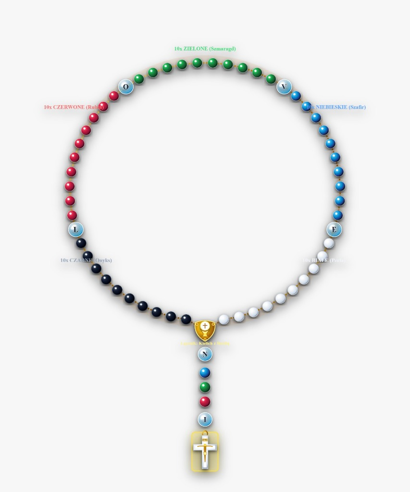
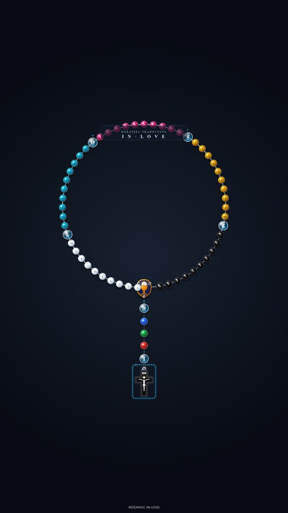
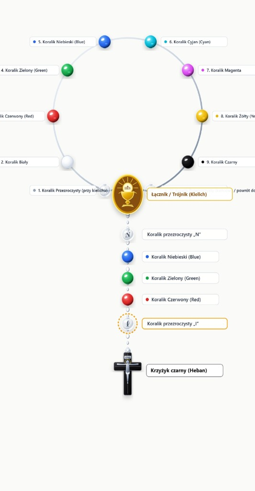
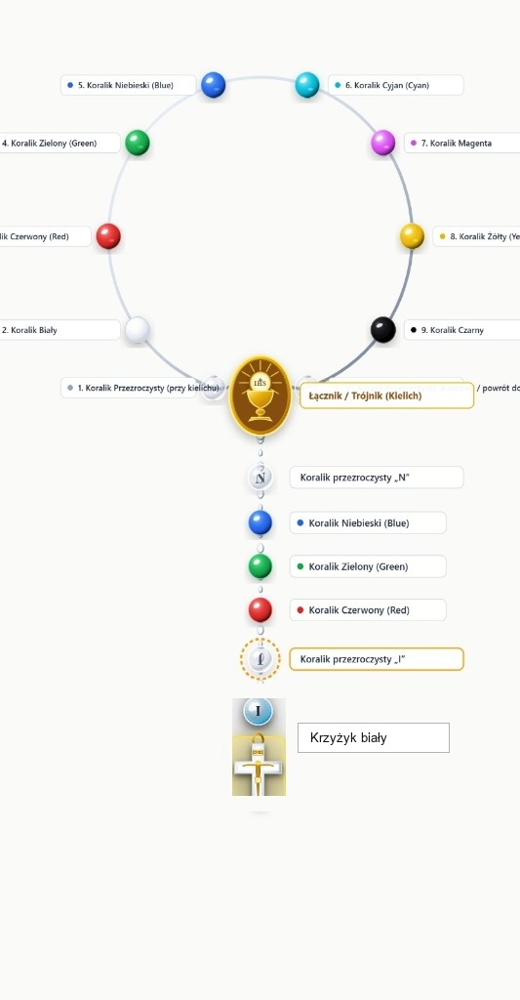
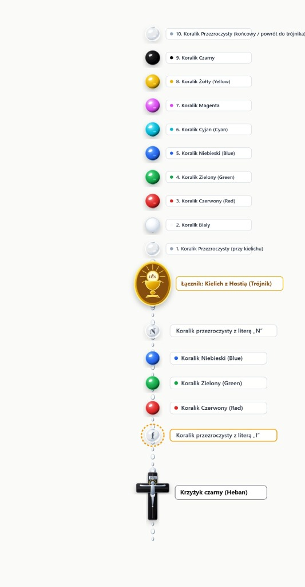
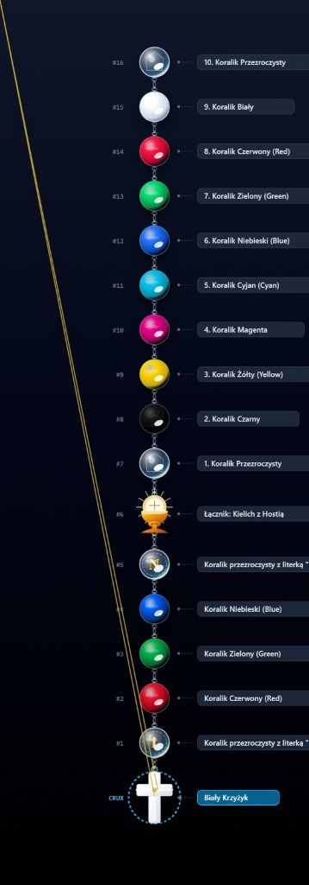

Duchowa Droga Przez Pismo Święte i Dzieje Kościoła
Wymiar Cyfrowy & Kolekcja Fizycznych Różańców niosących Tajemnicę Misji Barw i Kolorów
„Światłość w ciemności świeci i ciemność jej nie ogarnęła.”
(Ewangelia według św. Jana 1, 5)
Oficjalny Przewodnik Wydawniczy
WWW.WIDOKINARAJ.PL
Trzymasz w dłoniach przewodnik po dziele niezwykłym. Różaniec Historii Zbawienia (RHZ365) to nie tylko zbiór modlitw, ale żywa, całoroczna wędrówka przez dzieje relacji Boga z człowiekiem – od pierwszego błysku stworzenia aż po obietnicę Paruzji.
W niniejszej broszurze prezentujemy dwa nierozerwalne wymiary tej drogi: wymiar cyfrowy dostępny w serwisie widokinaraj.pl wraz z automatycznym odczytem przez lektora, oraz wymiar fizyczny – kolekcję 6 misternie wykonanych różańców, które poprzez unikalny kod barw (RGB i odwróconego CMYK) przypominają o dramacie grzechu, cenie odkupienia i nieskończonej miłości Stwórcy.
Różaniec Historii Zbawienia – RHZ365 jest organiczną, integralną częścią duchowej drogi, której towarzyszy blog oraz zbiór rozważań „Widoki na Raj” – WnR365. Nie są to dwa odrębne projekty, lecz dwa uzupełniające się skrzydła:
Wędrówka przez obiektywną historię zbawienia zapisaną na kartach Biblii i w dziejach Kościoła – od Genesis po Paruzję.
Osobista przestrzeń pytań, w której człowiek próbuje odnaleźć swoje własne miejsce w wielkim zarysie Bożego planu.
Zbiór rozważań został podzielony na cztery tomy odpowiadające rytmowi natury i ludzkiego serca:
Różaniec Historii Zbawienia opiera się na przejrzystej, matematycznie doskonałej strukturze, która prowadzi wierzącego przez całe Pismo Święte i dzieje Kościoła:
1 tajemnica na każdy dzień • Pełny jeden cykl modlitwy trwa dokładnie 175 dni
Współczesny świat stawia przed nami wyzwanie pośpiechu i rozproszenia. Odpowiedzią na tę potrzebę jest platforma widokinaraj.pl, która przenosi Różaniec Historii Zbawienia w nowoczesną, przejrzystą i dostępną przestrzeń cyfrową.
Każdego dnia serwis oferuje odtworzenie pełnej modlitwy i rozważania czytanego przez profesjonalnego lektora. Spokojny, uduchowiony głos pozwala modlić się w trakcie jazdy samochodem, podczas spaceru, odpoczynku czy w chorobie, gdy czytanie wzrokiem bywa utrudnione.
Interaktywny interfejs różańca na ekranie telefonu lub komputera dynamicznie wskazuje aktualną dziesiątkę, koralik i kolor przypisany do danej tajemnicy. Pozwala to śledzić modlitwę w skupieniu i uczyć się głębokiej symboliki Misji Barw i Kolorów.
Baza 175 tajemnic jest zsynchronizowana z kalendarzem liturgicznym i porami roku WnR365. Użytkownik ma natychmiastowy wgląd w teksty Pisma Świętego, komentarze duchowe oraz pytania pomagające zastosować Słowo Boże we własnym życiu.
Wszystkie 6 modeli różańców RHZ niosą w sobie tajemnicę Misji Barw i Kolorów. To nie przypadkowa estetyka, lecz głęboko przemyślana katecheza oparta na prawdzie o stworzeniu, upadku i odkupieniu człowieka.
Bóg na początku oddzielił światło od ciemności – obie te sfery w Bożym porządku były dobre. Jednak w wyniku grzechu pierworodnego doszło jakby do rozbicia kryształu. Nastąpiło destrukcyjne wymieszanie dobra ze złem. Szatan zaczął wmawiać człowiekowi, że światło jest ciemnością, a ciemność światłem. Przestaliśmy widzieć granicę między prawdą a kłamstwem.
W optyce barwy addytywne (Red, Green, Blue) to składowe czystego światła. Nałożone na siebie w pełni tworzą czystą Biel – symbol Bożej świętości. W połowie tworzą szarość (stan ludzkiej letniości), a wyłączone stają się przezroczystością w ciemności, gdyż światło w ciemności świeci.
Podczas gdy RGB jest światłem, schemat CMYK stosowany w druku symbolizuje to, co fizyczne, namacalne i ziemskie. Kontrast (K) to czarny pigment ziemi – proch, z którego człowiek powstał i do którego wraca.
Zło jest kłamstwem samym w sobie i odwraca Boży porządek, nazywając zło dobrem. W różańcu odzwierciedla to odwrócona kolejność barw:
Przejście koloru żółtego w czerwony jest wstrząsającym wyrazem tajemnicy paschalnej: przez zdradę Judasza przyszło zbawienie! Bóg potrafi największy grzech i podłość człowieka przemienić w ofiarę miłości i odkupienie na Krzyżu.
Paciorki z literami „I” i „N” wraz z 4 koralikami rozdzielającymi „L”, „O”, „V”, „E” tworzą wyznanie: IN LOVE – człowiek zatopiony w miłości, skierowany ku Bogu. W dziesiątkach litery „M” (Miłość / Matka / Maryja) i „J” (Jedność / Ja / Jezus) przypominają: przez Matkę Twoje „Ja” staje się świątynią Chrystusa.
Dlaczego warto posiadać fizyczny różaniec RHZ? Ponieważ modlitwa człowieka angażuje nie tylko myśl i duszę, lecz także ciało i zmysły. Dotyk chłodnego kamienia, ciężar krzyża w dłoni i przesuwanie kolejnych paciorków pomagają uciszyć gonitwę myśli i skupić się na Bogu.
Każdy egzemplarz z naszej pracowni powstaje z wyselekcjonowanych surowców: naturalnego czarnego onyksu, lśniących pereł, szlachetnego szkła optycznego o barwach rubinu, szmaragdu i szafiru, połączonych trwałym, jubilerskim splotem odpornym na lata codziennej modlitwy.
Różańce RHZ to doskonały dar na chrzest, bierzmowanie, ślub, jubileusz lub osobista pamiątka duchowej przemiany. Każdy różaniec dostarczany jest w eleganckim welurowym etui wraz z certyfikatem autentyczności.
Kup na www.widokinaraj.pl
Oryginalna fotografia modelu RHZ-01Idealny do uroczystej, głębokiej modlitwy domowej w blasku Bożego światła.
Kup teraz • widokinaraj.pl
Oryginalna fotografia modelu RHZ-02Mocny znak dla osób poszukujących oparcia w chwilach trudnych zmagań i prób wiary.
Kup teraz • widokinaraj.pl
Fotografia modelu RHZ-03Niezastąpiony różaniec samochodowy i kieszonkowy – idealny na jedną dziesiątkę dziennie.
Kup teraz • widokinaraj.pl
Wizualizacja modelu RHZ-04Świetlisty różaniec niosący pokój serca i nadzieję przebaczenia najtrudniejszych win.
Kup teraz • widokinaraj.pl
Fotografia modelu RHZ-05Dla miłośników skupienia, ciszy wewnętrznej i ascetycznej prostoty modlitwy serca.
Kup teraz • widokinaraj.pl
Fotografia modelu RHZ-06Lekki, piękny i promienny różaniec – wspaniały kompan codziennej drogi do pracy czy szkoły.
Kup teraz • widokinaraj.plNie musisz być teologiem ani poświęcać wielu godzin. RHZ365 został zaprojektowany tak, aby każdy człowiek – bez względu na ilość obowiązków – mógł odnaleźć kilka minut na spotkanie z Bogiem.
Wejdź na stronę na telefonie lub sięgnij po odpowiedni tom „Widoków na Raj”. Sprawdź tajemnicę wyznaczoną na dzisiejszy dzień.
Wciśnij przycisk „Odtwórz”. Pozwól, by spokojny głos lektora wprowadził Cię w wydarzenie biblijne i przeczytał tekst rozważania.
Trzymając w ręku jeden z 6 różańców RHZ, odmów dziesiątkę różańca. Spójrz na kolor koralika i przypomnij sobie jego duchowe znaczenie.
Zatrzymaj się na ułamek minuty w ciszy: „Gdzie jestem dzisiaj na drodze pomiędzy stworzeniem świata a wiecznością?”
Zamów wybrany Fizyczny Różaniec RHZ wraz z kompletem 4 Tomów „Widoków na Raj” (Zima, Wiosna, Lato, Jesień). Otrzymasz pełny zestaw do całorocznej odnowy duchowej w promocyjnej cenie zestawu.
Zamów Zestaw na www.widokinaraj.plPragnę z całego serca podkreślić, że nie jestem teologiem ani hierarchicznym autorytetem. Treści zawarte w Różańcu Historii Zbawienia oraz w tomach „Widoków na Raj” nie roszczą sobie prawa do bycia nowym dogmatem. Są przede wszystkim świadectwem osobistej drogi wiary, modlitwy i natchnienia, które w pokorze przypisuję Bogu.
W tworzeniu tego dzieła nieocenionym wsparciem jest moja żona, Ola, która z wrażliwością pomaga spojrzeć na publikowane słowa z kobiecej, głębokiej perspektywy. Oddajemy to dzieło w Twoje ręce z modlitwą, by stało się ono dla Ciebie źródłem pokoju, światła i nadziei.
Wszystkie 6 modeli różańców oraz 4 tomy „Widoków na Raj” zamówisz bezpośrednio na oficjalnej stronie internetowej projektu:
WWW.WIDOKINARAJ.PL
Kontakt • Zamówienia Indywidualne i Parafialne • Rozważania Online
365 DNI • JEDNA HISTORIA • JEDNA DROGA • JEDNA NADZIEJA
Historia zbawienia trwa nadal. A Ty jesteś jej umiłowaną częścią.